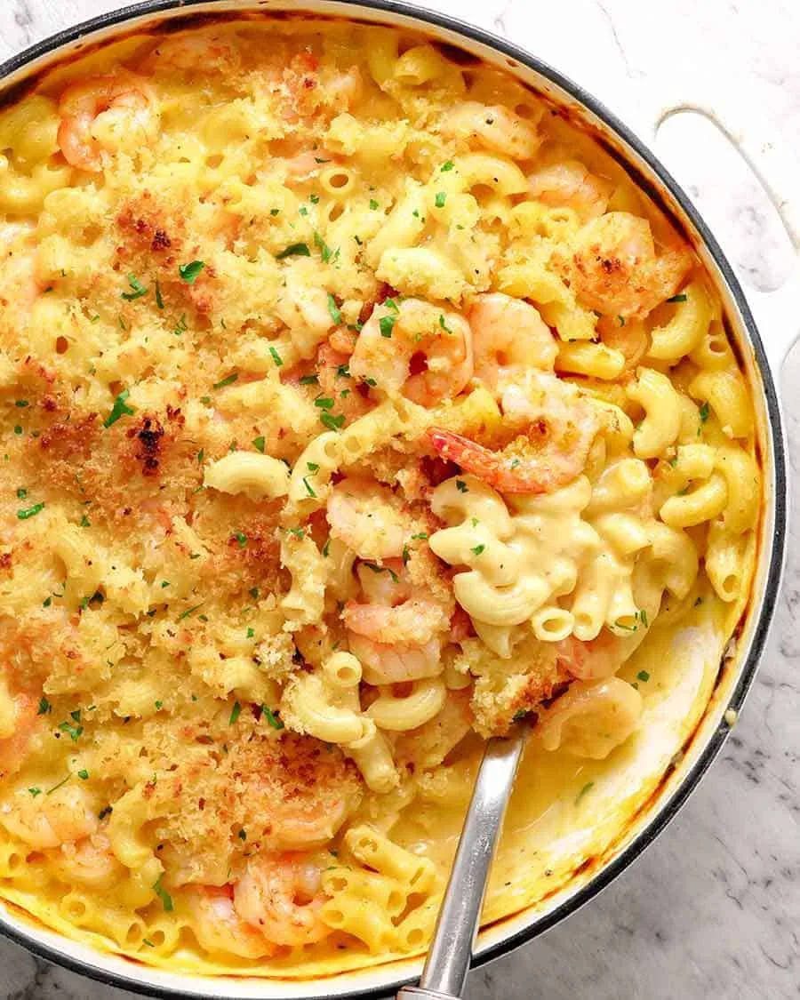

Garlic Shrimp with Mac And Cheese, An aesthetic and mouth-watering recipe!
Description:
A creamy, cheesy classic gets a savory twist with perfectly cooked garlic shrimp,
creating the ultimate comfort food combo that's both rich and satisfying.

Ingredients
- 500 g / 1 lb peeled shrimp/prawns (Note 1)
- 3 garlic cloves, finely chopped
- 1 tbsp olive oil
- 50 g / 3.5 tbsp unsalted butter, divided
- 3 tbsp / 30g flour, plain / all purpose
- 2 cups / 500ml milk, preferably warmed (Note 2)
- 2.5 cups hot tap water
- 250 g / 8 oz elbow macaroni, uncooked (2.5 cups)
- 1.5 cups (150g) cheese (Cheddar, gruyere, or other), freshly grated (Note 3)
- 3/4 cup (75g) mozzarella cheese, freshly grated (Note 3)
- Seasonings:
- 3/4 tsp salt
- 1/4 tsp pepper
- 1 tsp garlic powder
- 1/2 tsp mustard powder
- Parmesan Breadcrumb Topping:
- 1/3 cup panko breadcrumbs
- 1/4 cup grated parmesan
- 1 tbsp olive oil
Steps
- Preheat broiler/grill on high.
- Mix together Breadcrumb Topping.
- Heat oil and melt 1 tbsp butter in a large, deep skillet or heatproof pot on the stove over high heat.
- Add shrimp, sprinkle with pepper, then cook for 1 minute. Add garlic and cook for another minute until the
shrimp has changed color but not fully cooked.
- Transfer shrimp to a bowl. Turn heat down to medium.
- Melt remaining butter. Add flour and cook for 1 minute.
- Pour milk in slowly, stirring as you go. Once incorporated and lump-free (use a whisk if needed), stir in
Seasonings, then water.
- Once the liquid is hot, add macaroni. Cook for 8 minutes, stirring regularly, until macaroni is almost
cooked through, then take it off the stove.
- Add cheeses and stir through, then add shrimp. Taste for salt and tweak if needed. It should be saucy (see
video) - it gets absorbed. Should still be saucy at this stage - sauce gets absorbed/thickens more in the
next step.
- Sprinkle over breadcrumbs, then place under the hot grill for just 2 - 3 minutes until the top is golden.
- Sprinkle with parsley if desired and serve immediately!
Enjoy you meal!
Home